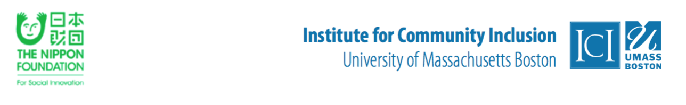

以下は募集フォーム必要事項です。実際に応募される際は、明記されているURLからオンラインにて募集フォームを作成してください。
本研修事業では、すでにある程度の障害学生支援やキャリアサービスを提供し、障害のある学生への包括的なサービスや支援の向上に対する大学組織としてのコミットメントを示すことのできる大学からの応募を求めています。応募フォームの最後に、大学の役員からのサポートレターをアップロードしていただきます。
尚オンライン募集フォームは、全て一度に完了する必要はありません。ページの上部に、 Save and continue later と記してある箇所があります。その部分をクリックすると、記入をした回答を何度でも保存、上書きし、後に申請書を完成し提出することが可能です。
お問い合わせ先：Dr. Heike Boeltzig-Brown ( heike.boeltzig@umb.edu)
募集締め切り：２０１６年４月２９日
オンライン募集フォームはこちらから： http://sgiz.mobi/s3/bostontraining2016
ご連絡先
姓
フリガナ
名
フリガナ
役職名
所属部署（室・課・部）の種類
大学名
電話番号（内線番号）
ファックス番号
Eメールアドレス
代替Eメールアドレス
あなたは本研修に参加するご本人ですか。
あなたの大学、障害学生支援とキャリアサービスについて
あなたの大学は... (以下より一つ選択してください。）
あなたの大学は、障害のある学生に障害学生支援サービスを提供していますか？
2.1 あなたの大学では、障害のある学生に障害学生支援サービスの提供をいつ開始しましたか。
2.2 あなたの大学の障害学生支援の担当職員は、障害のある学生に対して直接的な支援サービスを提供していますか。
いいえ- 2.3へ
2.2.1. 障害学生支援の担当職員が障害のある学生に対しての直接的な支援を週に合計何時間行っているか推定してください。
2.3. あなたの大学には、障害のある学生のための障害学生支援の提供に関するガイドラインはありますか。
2.4 あなたの大学の障害学生支援体制の長所は何ですか。
2.5. あなたの大学の障害学生支援体制の短所は何ですか。
本研修に参加するにあたってのあなたの目標
本研修への参加が決定した場合、今後の研修に参加される方々のメンターとしてご協力いただけますか。その役割として、研修での経験内容についてのプレゼンテーションを行うことや、電話やメールにて研修の参加者達と障害支援に関する問題について連絡を維持すること等が例として挙げられています。
学生支援に関わる執行役員や理事、担当部局の代表からのサポートレターをアップロードしてください。また、サポートレターには各高等教育機関から障害学生支援とキャリアサービスの担当職員それぞれ１名（計２名）を本研修に派遣する意義が示されている事が必要です。（PDF形式のみ）
応募フォームの必要事項は以上です。
結果につきましては、２０１６年７月１日までにEメールにてご報告いたします。
